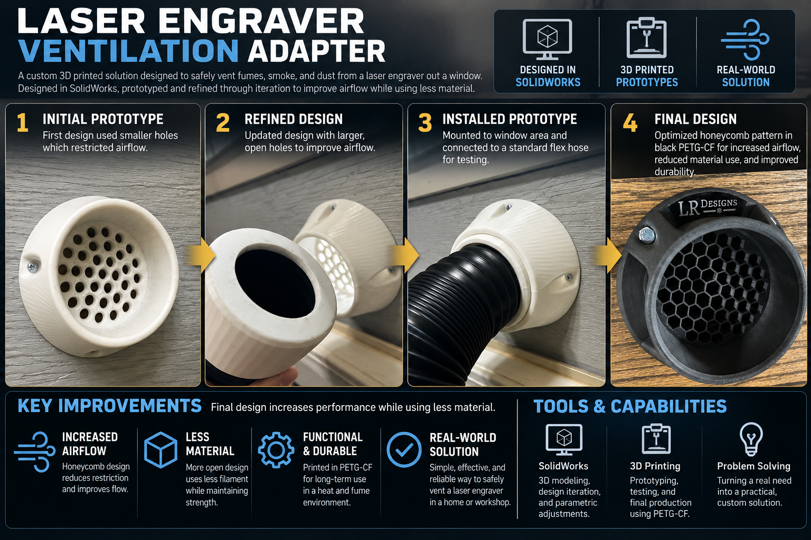

Personal Project · SolidWorks · FDM Prototyping
Laser Engraver Window Ventilation Adapter
A practical adapter for routing a laser engraver's exhaust hose through a window, developed through CAD modeling and revisions to the printed geometry.
Problem and Design Goal
I needed an adapter that would help route exhaust from a laser engraver through a window. The goal was to create a functional, printable component that fit the intended setup and could be refined after seeing the physical prototype.
Rather than treating the first print as final, I used it to review how the component was shaped and where the design could be improved.
Prototype and Design Iteration
Initial Prototype
The early white printed version used smaller openings. It helped establish the overall form and gave me something physical to evaluate.
Revised Geometry
I revised the SolidWorks model to use a more open honeycomb-style pattern. The intent was to reduce unnecessary printing material and avoid overly restrictive openings.
Final Printed Component
The later version was printed in black PETG-CF. The project demonstrates moving from CAD geometry to a finished functional component.
Practical Tradeoffs
Design choices balanced physical fit, opening geometry, material use, printability, and the requirements of the installed exhaust path.
Design Progression

Important distinction: The honeycomb revision was an airflow-oriented design change, not a measured airflow or filtration performance claim. I have not published instrumented flow, pressure-drop, or emissions data for this project.
What This Project Demonstrates
SolidWorks modeling, functional FDM printing, geometry changes based on a physical prototype, selection of a final print material, and the practical evaluation of how a component will be installed.
My takeaway: a useful design doesn't have to be complicated. It needs to address the actual installation constraints and be straightforward to improve.
Discuss a Technical Project
I’m open to connecting about CAD modeling, functional prototyping, technical documentation, and practical industrial problems. If reaching out, include the intended use, key dimensions or constraints, and what you want the finished solution to accomplish.
This is a personal technical portfolio, not an offer of licensed professional engineering or regulated design approval.
Connect on LinkedIn →More CAD Projects →